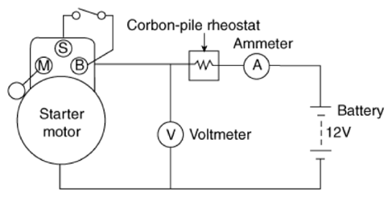

Free Running Inspection
WARNING: This page is about a different variant/trim than selected.
- Place the starter motor in a vise equipped with soft jaws and connect a fully-charged 12-volt battery to starter motor as follows.
- Connect a test ammeter (150-ampere scale) and carbon pile rheostats shown in the illustration.
- Connect a voltmeter (15-volt scale) across starter motor.
 Courtesy of HYUNDAI MOTOR AMERICA
|
- Rotate carbon pile to the off position.
- Connect the battery cable from battery's negative post to the starter motor body.
- Adjust until battery voltage shown on the voltmeter reads 11.5 and 11 volts.
- Confirm that the maximum amperage is within the specifications and that the starter motor turns smoothly and freely.
| Items |
Specification |
| Current (Max.) |
Max. 100 A |
| Speed (Min.) |
Min. 3, 550 RPM |
| Items |
Specification |
| Current (Max.) |
Max. 80 A |
| Speed (Min.) |
Min. 3, 100 RPM |